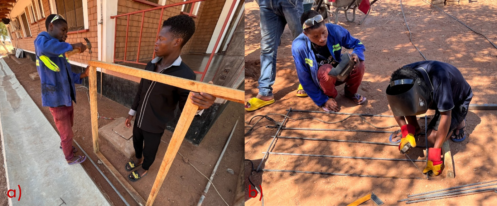
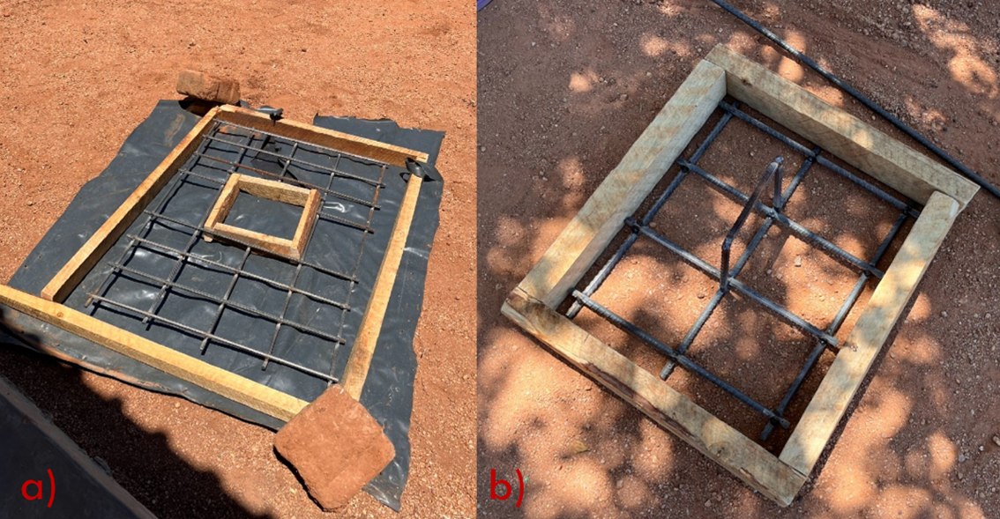
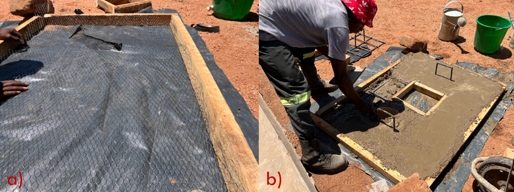
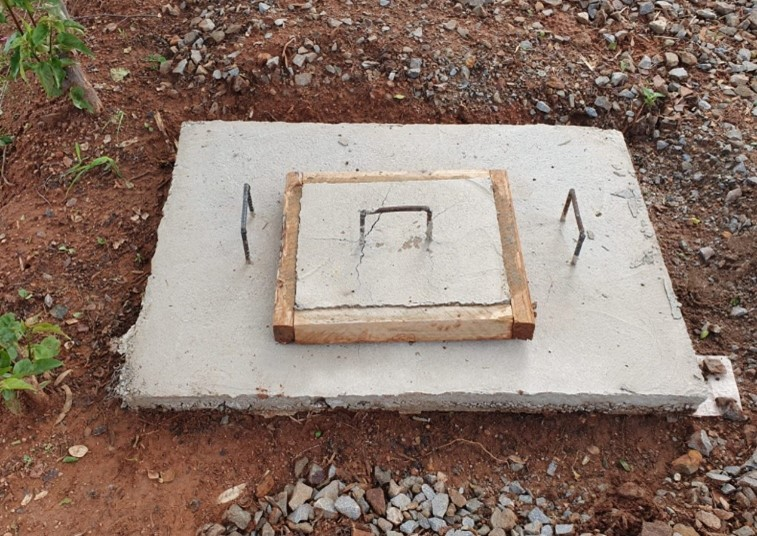
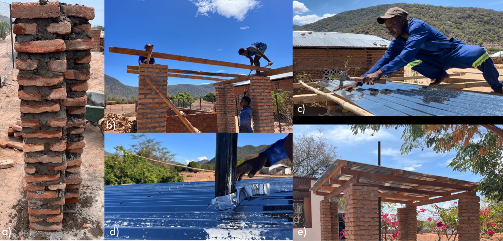

Extra
1 Ash pit
To minimize contamination of the environment, an ash pit has to be built. Search for older structures made of cement, such as old pit latrines or septic tanks. If you do not find any, build a pit, using bricks and cement to safely disposed of the ashes (in enclosed space, preventing leakage to soil). Empty oil drums can be used instead - once filled wit ashes, close and bury them.
In this project an old pit latrine was used with a lid additionally. Using the leftover of the roof, a structure made of wood was assembled, on which two metal meshes were laid, finer mesh at the bottom and more robust one formed from the reinforcement bars above. The construction steps are shown in Figures 1, 2, and 3.



Both the cover, and the loading door are filled with cement and wetted every 4 hours for one day. Waiting time of one more day ensures complete bonding of concrete, after which the cover and the loading door can be installed above the pit (see Figure 4).

2 Roof
The construction of the roof protects the incinerator from weather conditions, ensuring its greater longevity. Its costs is around 157 USD and takes between 2 and 4 days.
Four robust pillars should be build with bricks and cement, do not skimp on bricks and concrete. Choose the side on which you want the water to be drained and make sure that the columns on that side are around 10 cm shorter than on the opposite side. Insert a metal wire, when constructing the top section of each column, to later anchor the timber. Once the column are completed, let them dry for at least one day, before starting the work on roofing.
The wooden beams (2” \(\times\) 4”) should connect two pairs of columns at their tops. Aanchor the beams to the columns with the earlier integrated wire. Lay four perpendicular beams of the same size on top of the two timber beams equally dividing the roof area. Add one more layer of four, equally spaced, perpendicular to the preceding layer, beams. Place the corrugated iron sheet on top of the beams.
A hole needs to be cut to route the chimney though the roof. A flashband can be used to prevent water leaking between the chimney and the roof.

2.1 Material list
| No. | Item | Specification | Qty. | Source | Cost per unit (USD) | Total Cost (USD) |
|---|---|---|---|---|---|---|
| 1 | Cement bag | 50 kg | 1 | Monkey bay | 12.22 | 12.22 |
| 2 | Roof nails | 1 kg | 2 | Monkey bay | 2.17 | 4.33 |
| 3 | Corrugated iron sheet | L \(\times\) W: 305 cm \(\times\) 75 cm | 7 | Monkey bay | 5.78 | 40.44 |
| 4 | Sand | 1 ton | 0.5 | Monkey bay | 2.78 | 1.39 |
| 5 | Bricks | L \(\times\) W \(\times\) H: 10 cm \(\times\) 17 cm \(\times\) 6 cm | 700 | Monkey bay | 0.03 | 17.50 |
| 6 | Roof wires | D \(\times\) L: 2.5 mm \(\times\) 6 m | 1 | Monkey bay | 1.11 | 1.11 |
| 7 | Timber 2” \(\times\) 3” | L \(\times\) W \(\times\) H: 5 cm \(\times\) 7.6 cm \(\times\) 4 m | 4 | Monkey bay | 5.56 | 22.22 |
| 8 | Timber 2” \(\times\) 4” | L \(\times\) W \(\times\) H: 5 cm \(\times\) 10 cm \(\times\) 4 m | 4 | Monkey bay | 6.94 | 27.78 |
| 9 | Timber 2” \(\times\) 6” | L \(\times\) W \(\times\) H: 5 cm \(\times\) 15 cm \(\times\) 4 m | 2 | Monkey bay | 8.33 | 16.67 |
| 10 | Flashband/Rubberwise 30 cm | 2 m | 1 | Monkey bay | 1.94 | 1.94 |
| Total Costs (USD) | 145.61 |